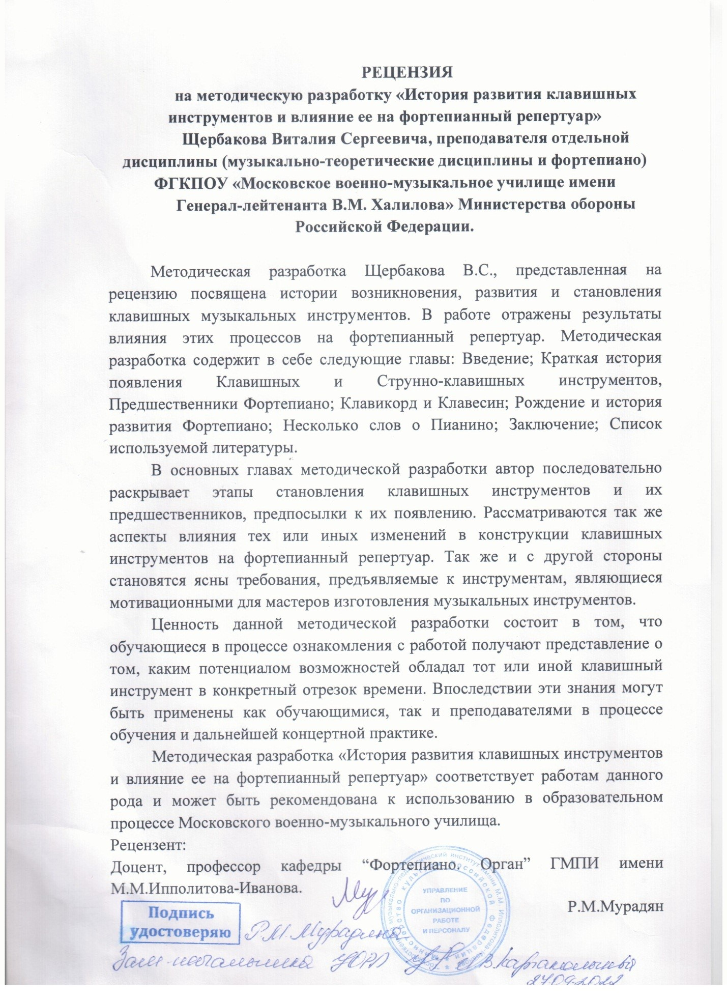

ИСТОРИЯ РАЗВИТИЯ КЛАВИШНЫХ ИНСТРУМЕНТОВ И ВЛИЯНИЕ ЕЕ НА ФОРТЕПИАННЫЙ
РЕПЕРТУАР.
Аннотация
Методическая разработка посвящена истории возникновения, развития и
становления клавишных инструментов в целом и струнно-клавишных
инструментов в частности. Определенное внимание обращено к
предпосылкам и результатам этого развития, поскольку они косвенно и
напрямую влияют на фортепианный репертуар. Методическая разработка
поможет обогатить знания обучающихся для наилучшего восприятия и
исполнения произведений различных эпох и стилей и может быть полезна в
процессе обучения и дальнейшей исполнительской практике как
преподавателям, так и обучающимся междисциплинарного курса
«Дополнительный инструмент – фортепиано».
Введение
Цель методической разработки:
Проследить путь возникновения, развития и становления клавишных
инструментов в целом и струнно-клавишных в частности. Методическая
цель – обогащение знаний обучающихся для наилучшего восприятия и
исполнения произведений различных эпох и стилей.
Задачи методической разработки:
Выявить закономерности и предпосылки к развитию клавишных
инструментов; проследить этапы развития клавишных инструментов и
оценить влияние этих изменений на фортепианное исполнительство как
напрямую, так и в обратном направлении.
Формы работы:
- индивидуальная
- самостоятельная
Значение клавишных инструментов в мировой музыкальной культуре
чрезвычайно велико, их история насчитывает примерно двадцать пять
веков, находя собственные истоки еще в Древней Греции. В настоящее
время клавишные инструменты представлены повсеместно и на протяжении
нескольких веков участвуют во всех сферах духовной жизни человечества,
как-либо связанных с исполнением музыки. Клавишные инструменты прошли
длительный путь развития от простейших форм, состоящих всего из одной
струны и одной передвижной подставки (прообраз клавиши) до современных
музыкальных инструментов, хоть и крепко устоявшихся в повсеместном
употреблении, но при этом не остановившихся в собственном развитии.
Краткая история появления Клавишных и Струнно-клавишных инструментов.
Предшественники Фортепиано
Момент появления струнных клавишных инструментов уводит нас в глубь
веков эпохи Средневековья, оказывается совсем непросто выяснить где и
когда был создан первый клавишный струнный инструмент. На его
формирование могли оказать влияние несколько групп музыкальных
инструментов. Истоки возникновения некоторых из них во временах
античной Греции.
Первым из этих инструментов может считаться монохорд, изобретение и
применение которого приписывается древнегреческому философу Пифагору,
VI век до н.э. Монохорд представлял собой в первоначальном виде одну
струну, протянутую над доской – опорой и одновременно резонансной
декой. По краям деки находились подставки, на которых крепилась
струна, получавшая таким образом ограниченную длину. Существовала и
третья подставка, передвижная, меняя положение которой можно было
менять звуковысотность издаваемого звука. Пифагор применял Монохорд
для изучения физических свойств звука, теории музыки, построения
музыкальных ладов.
Согласно воззрениям Пифагора и его последователей, Вселенная и
отдельные ее планеты находятся в определенных математических
зависимостях, подобных тем, на которых построена музыка. Весь мир,
утверждал Пифагор, есть распределенная по числам гармония. А числа эти
– он был убежден в этом – образуют те же соотношения, что и интервалы
между различными ступенями гаммы.
Позднее, но при этом довольно скоро, на монохорд была установлена
вторая струна, а затем четыре и более. Описание подобных инструментов
под названием геликон известно нам со II века н. э. В те времена
инструмент применялся в качестве аккомпанемента к поэтическим
произведениям. К XI веку монохорд имел уже восемь струн и теперь
иногда именовался маникорд. Появилось и большее количество передвижных
подставок, позволяющих быстрее перемещаться от одного тона к другому.
Но это также потребовало большего умения от исполнителей, более
длительного обучения.
Еще одним прародителем клавишно-струнных инструментов может считаться
гидравлос, или водяной орган, появившийся предположительно в III веке
до н.э. в Александрии. Его изобретение приписывается механику и
инженеру Ктезибию. Инструмент представлял собой огромную «флейту
Пана», состоящую из нескольких труб разного размера и диаметра.
Исполнитель добивался звучания инструмента посредством механического
дутья, для чего использовался насос с водяной регулировкой воздушного
давления из сельского хозяйства.
Управление инструментом осуществлялось посредством выдвижных рычагов,
расположенных в передней части инструмента. Рычаги соответственно были
названы клавишами. Инструмент довольно успешно распространялся по
странам Средиземноморья, постепенно совершенствуясь. Так примерно в I
веке до н.э. выдвижные рычаги были заменены на нажимные, что было
удобнее. Как понятно из описания, гидравлос является прародителем
такого важного музыкального инструмента, как орган. Примерно в IV веке
использование воды как регулятора давления прекращено, и строится
пневматический орган. Инструмент становится проще по устройству. К XI
веку появляется система, возвращающая клавиши инструмента в исходное
положение после того, как пальцы исполнителя перестают нажимать на
них.
Еще одна группа инструментов, повлиявших на появление
струнно-клавишных инструментов включает в себя такие музыкальные
инструменты, как лютня и органиструм. Лютня появляется в Европе
примерно в X веке и приобретает признание музыкантов. Звук инструмента
прекрасно сочетается с человеческим голосом, что и было одной из
причин широкого распространения. Один из приемов игры на инструменте –
зацепление струн тонким плектром, что будет в дальнейшем применено на
одном из важнейших из клавишных инструментов – клавесине, о чем будет
сказано в дальнейшем повествовании. Органиструм представлял собой
довольно большой деревянный корпус, оканчивающийся пустотелой шейкой с
колками для укрепления струн. Звук извлекался путем вращения колеса с
обратной от колков стороны корпуса, по ободу которого проходили
струны. Несколько струн органиструма были толстыми – басовыми,
несколько – тонкими, мелодическими. Звуковысотность менялась
посредством брусочков с прикрепленными к их концам тангентами, на
которые нажимал один из исполнителей. Второй исполнитель держал на
себе инструмент и вращал колесо посредством рычага. Название свое
органиструм получил за схожесть извлекаемых звуков со звучанием органа
и возможность исполнения двухголосия и трехголосия. Создание и
устройство органиструма описывает монах и музыкант Одон, живший в IX –
X веках.
В XIII – XIV веках встречается описание применения монохордов,
устройство которых включает в себя от четырех до двадцати струн,
появляется и новое название – клавихорд (или привычнее – клавикорд),
что подсказывает нам применение в его конструкции ключей (от слова
clavis), которые теперь принято называть клавишами. К началу XV века
распространение этого инструмента уже достаточно велико.
Клавикорд и Клавесин
Первоначально клавикорд был небольшим ящичком, длиной до метра. Он
вмещал в себя струны одинаковой длины, натянутым параллельно длинным
сторонам ящика. Количество струн было небольшим, около двенадцати,
изготавливались струны из тонкой латунной проволоки. Под декой и
перпендикулярно струнам располагались клавиши разной длины и формы.
Каждая из клавиш оканчивалась ввинченным или вбитым гвоздиком с
верхним окончанием, напоминающем лезвие отвертки. Гвозди именуются
тангентами. Тангенты при нажатии клавиши поднимались и прижимались к
струнам, разделяя их на два отрезка и в следствие удара приводя в
колебание. Один из участков струн (левый) заглушался, первоначально
рукой, а в более поздней конструкции оплеткой из плоской материи.
Таким же образом эта оплетка прекращала звучание струны после
отпускания клавиши, когда тангент уже не прижимался к струне. Тонкие
латунные или железные струны давали слабый, непродолжительный звук. Но
благодаря тангенту исполнитель мог воздействовать на звук не только в
момент удара, но и после нажатия клавиши, добиваясь нежного и мягкого
трепетания звука. Название приема – «Bebung».
Первоначально конструкция клавикорда была «связанной», особенностью
являлось то, что на одну струну приходилось по нескольку клавиш и
тангентов, до трех или четырех. Имея всего шесть струн, клавиатура
могла состоять из 20 клавиш. Такое устройство инструмента сильно
ограничивала его полифонические и гармонические возможности, делая его
преимущественно мелодическим. Постепенно количество струн клавикорда
увеличивается и к XVII – XVIII векам появляется система «свободных
клавикордов». Подобная система подразумевает обслуживание каждой
клавиши собственной струной. Изменения коснулись и самих струн, теперь
они не обязательно располагались параллельно корпуса инструмента,
использовалась натяжка по диагонали. Длина струн так же стала
применяться различная, в зависимости от высоты извлекаемого звука –
для высоких регистров короткие струны, для низких – длинные. Натяжение
струн так же выровнялось.
Существовали клавикорды разнообразных размеров, применялись так же
по-разному: большие инструменты с относительно ярким звучанием для
относительно больших помещений, и небольшие для камерного
музицирования. Встречались инструменты и в форме небольших шкатулок.
Довольно часто музыкальные инструменты тех времен, а в частности и
клавикорды, украшались живописью, позолотой, инкрустациями, различными
мозаиками разноцветных пород дерева, но, поскольку это сложно отнести
к эволюции и развитию технических и выразительных средств
инструментов, мы не будем подробно останавливаться на внешнем
украшении.
Одним из самых известных исполнителей на клавикорде был сын Иоганна
Себастьяна Баха – Филипп Эмануэль Бах. Он первым из клавикордистов
стал применять прием колебания и покачивания звуков «Bebung»,
многочисленные украшения – морденты, трели. Им создан большой трактат
«Опыт истинного искусства клавирной игры» - первый подобный труд для
клавикордистов. Будучи первоклассным виртуозом, Филипп Эмануэль
укрепляет в своем труде роль большого (первого) пальца в
исполнительстве на клавишных инструментов, что окончательно
декларирует равноправие всех пальцев рук. «Каждому клавиристу
следовало бы иметь и хороший клавесин и хороший клавикорд, чтобы можно
было попеременно играть на них всевозможные произведения. Тот, кто
хорошо играет на клавикорде, сможет сыграть на клавесине, но не
наоборот. Итак, чтобы научиться хорошему исполнению, надо пользоваться
клавикордом, а чтобы приобрести нужную силу в пальцах – клавесином.
Если привыкнуть к клавикорду, то при игре на клавесине встретится
много затруднений, на нем будет трудно исполнять произведения для
клавира с сопровождением других инструментов, которые приходится
играть на клавесине из-за слабости звука клавикорда, а то, что выходит
с трудом, не может произвести должного впечатления».
Клавикорд еще при жизни Л. Ван Бетховена был распространен среди
музыкантов, профессионалов и любителей. Л.Ван Бетховен называл
клавикорд единственным клавишным музыкальным инструментом, который
имеет силу выразительности звуков. Со временем клавикорд не смог дать
музыкантам полного удовлетворения, его звучание было слишком слабым и
нежным даже после всех усовершенствований. Существовавшие параллельно
струнно-щипковые инструменты, такие как лютня, цитра, благодаря игре
плектром давали звук гораздо ярче и полнее, особенно в сравнении с
инструментами ранних времен своего существования. Подобный принцип
звукоизвлечения (при помощи плектра) представлялся более выигрышным, и
к новому клавишному инструменту было решено применить плектровый
способ звукоизвлечения.
Новый вид инструмента появляется примерно к XV веку и представляет
собой цимбал (распространенный в то время струнно-щипковый инструмент,
по форме напоминающий крыло птицы) со встроенной клавиатурой и
проведенным от нее зацепляющим приспособлением. Исходя из конструкции,
появилось и название – клавицимбал, или клавичембало (одно из ранних
наименований клавесина). Таким образом, клавикорд и клавесин
развивались параллельно друг другу. Обратимся к особенностям
устройства клавесина. На конце клавиш находится не тангент, а прыгун –
деревянная палочка, проходящая между струнами. Внутри нее двигается
деревянная пластинка с укрепленным на ней язычком, который как плектр
зацепляет струну при нажатии клавиш. При движении обратно, когда
клавиша отпущена, язычок проскальзывает мимо струны за счет отклонения
пластинки относительно прыгуна. Кусочек войлока на верхнем конце
прыгуна опускаясь, заглушает колебания струны.
Всем известно, что первым материалом, из которого изготавливались
язычки-плектры, были вороньи перья, особым образом заостренные.
Парижский мастер Паскаль Таскэн в 1768 году изобрел клавесин с
язычками из особо обработанной кожи буйвола, придававших звуку
приятный тембр, по свидетельствам современников. В XX веке впервые
были применены искусственные материалы.
Клавесин, в отличие от клавикорда, изначально имел «свободную
конструкцию», то есть количество струн было равно количеству клавиш,
или превышало количество последних. Также, в отличие от клавикорда,
сохранившего на протяжении веков свою первоначальную прямоугольную
форму, клавесин почти сразу претерпевает изменения формы. Характерная
крыловидная форма устанавливается примерно к середине XV века и
вызвано это неравной длиной струн, применявшихся для высоких и низких
регистров. В зависимости от сферы применения различными были размеры
инструментов. Клавесины небольшой величины и силы звука соответственно
получили общее название – спинет (или Вёрджинел, в Англии). Данная
разновидность получила распространение в домашнем музицировании,
поскольку, ввиду небольшого размера резонансной деки, сила звука этих
инструментов была соответственно небольшой. Инструменты,
предназначавшиеся для больших залов и использовавшиеся в концертной
жизни были существенно больших размеров, зачастую имели более сложную
конструкцию и именовались по-разному в разных странах: клавичембало,
чембало, клавесин, кильфлюгель, клавицимбал.
Сухой и острый, яркий звук клавесина подталкивал музыкантов и мастеров
изготовления музыкальных инструментов совершенствовать конструкцию,
усложнять ее, менять положение прыгунов относительно струн, добиваясь
новых тембров, новой окраски извлекаемых звуков. Таким образом,
появляются различные формы язычков-плектров: применяются различные их
формы, от широких и тупых, до тонких и острых. При переключении
регистров клавесина используется тот или иной набор прыгунов,
соответствующих выбранному тембру. Также варьируется и положение
прыгунов относительно струн: расположенные ближе к концам струн дают
звук более резкий, а по мере приближения к центру, более мягкий и
глухой. Наибольшее применение получили лютневый и фаготовый регистры.
Для фаготового применялась полоска пергаментной бумаги, для лютневого
регистра звук несколько заглушался, притуплялся. Часто применялось
использование разных наборов струн для каждой клавиши, нескольких
клавиатур.
Яркие представители клавирного исполнительства одновременно являлись
двигателями развития клавишных инструментов, и клавикорда, и
клавесина. Именно их стремление к выражению собственных чувств, эмоций
и впечатлений побуждали мастеров изготовления музыкальных инструментов
постоянно вносить улучшения и изменения в конструкцию клавишных
инструментов, казавшихся в те времена несовершенными. Такими
композиторами до И.С.Баха являются У.Берд, Дж.Булл, Г.Перселл,
О.Джиббонс в Англии; Дж. Фрескобальди, Я.Свелинк, Д.Скарлатти в
Италии; Д.Готье, Ж.де Шамбоньер, Л.Куперен, Л.Маршан, Ф.Куперен,
К.Дакен во Франции; И.Фробергер, И.Пахельбель в Германии и многие
другие. Сравнивая применение клавесина и клавикорда в быту можно
выяснить, что последний использовался в основном в домашней
обстановке, в домашнем музицировании, что было обусловлено его
размерами и силой звука. Клавесин же свободно использовался как
концертирующий инструмент, обладающий значительной звучностью и
разнообразием тембров и регистров, особенно если он имел несколько
клавиатур (мануалов). Часто клавесин участвовал в различных ансамблях
и оркестрах, по своей окраске звука прекрасно сочетался с певучими
тембрами струнных и духовых инструментов.
Колоссальное по значительности и значимости наследие создал И.С.Бах, в
том числе и в области клавирного искусства. Среди его сочинений есть и
те, что предназначены для исполнения в концертной практике, и те, что
могут быть предназначены для домашних занятий. Подобное деление
исключительно условно, особенно в условиях современного
исполнительства, когда на концертной эстраде есть возможность услышать
любое из дошедших до нас произведений композитора. Здесь можно лишь
отметить, что сам И.С.Бах относился к некоторым собственным клавирным
произведениям как к инструктивному материалу, имеющему цель помочь
начинающим исполнителям в обучении игре на клавире. К настоящему
времени ситуация такова, что ни один исполнитель на музыкальных
инструментах не обходится без изучения наследия И.С.Баха, будь то
концертная практика или процесс обучения. Среди клавирных сочинений
композитора стоит особо отметить шесть Французских сюит, шесть
Английских сюит, шесть Партит; два тома Прелюдий и Фуг, в каждом из
томов по 24 цикла во всех тональностях, Искусство Фуги, «Каприччио на
отъезд возлюбленного брата»; Два сборника Инвенций – двухголосных и
трехголосных и многие другие. Помимо произведений. Написанных для
клавира соло в творчестве композитора имеются различные
камерно-инструментальные ансамбли с участием клавира, к ним можно
отнести Сонаты для скрипки и клавира и Сонаты для виолы-да-гамба и
клавира. Есть и сочинения, в которых клавир выступает солистом
оркестра или ансамбля: Концерты для одного, двух, трех и даже четырех
клавесинов с оркестром; Бранденбургские концерты, где клавесин
выступает в качестве одного из сольных инструментов. Есть также
сочинение, где роль солиста и оркестра выполняет один клавесин –
«Итальянский концерт».
Творчество И.С.Баха поистине безгранично, и простое перечисление его
лишь даже клавирных сочинений могло бы занять значительную часть
данной работы. Но стоит заметить, что удивительным образом описание
клавирного творчества композитора содержится не в основном разделе
данной работы, поскольку И.С.Бах создавал свои произведения,
ориентируясь на современные ему клавишные инструменты, достигшие уже
относительного совершенства и которые были близки к пределам
собственных возможностей. Этими инструментами являлись клавесин и
клавикорд – предшественники молоточкового фортепиано, прародителя
современных Роялей и Пианино. Первые образцы инструмента, в механике
которого используются не тангенты и плектры, а молоточки, ударяющие по
струнам, появляются в первой четверти XVIII века, почти одновременно у
трех мастеров: Бартоломео Кристофори в Италии, Жан Мариус во Франции и
Готлиб Шретер в Германии. Получается, что еще при жизни И.С.Баха эти
инструменты были созданы и начали свой путь становления и
совершенствования. Композитору был представлен один из созданных на
фабрике Зильбермана инструментов в 1726 году, но инструмент не
произвел на него хорошего впечатления, показался излишне грубым в
туше, слабым и невыразительным в звуке. Возможно, что мастер,
изготовивший инструмент, не до конца разобрался в устройстве механики,
предложенной Б.Кристофори. С 1735 года на фабрике Зильбермана
производятся инструменты улучшенной конструкции, с механизмом сходным
с конструкцией Кристофори, и один из инструментов производит
положительное впечатление на И.С.Баха. Мы уже упоминали одного из
сыновей И.С.Баха – Филиппа Эмануэля, рассказывая о клавикорде и
отмечая, что Филипп Эмануэль создал первый труд, объясняющий принципы
исполнительства на клавирах. Здесь стоит упомянуть и другого сына –
Иоганна Кристиана, устроившего первый публичный концерт с
демонстрацией нового инструмента – молоточкового фортепиано. Концерт
позволил познакомиться с особенностями и возможностями нового
инструмента гораздо более широкой публике. Знаменательное событие
произошло в Лондоне в 1767 году.
Рождение и история развития Фортепиано
Примерно в самом конце XVII века внимание западноевропейских любителей
музыки и профессиональных музыкантов привлекает старинный инструмент –
цимбалы: инструмент, представляющий из себя плоский ящик с натянутыми
на нем струнами. По струнам цимбал исполнитель ударяет двумя
молоточками-колотушками, которые держит в руках. И внимание это
связано с тем, что цимбалами заинтересовался скрипач Пантелеон
Хебенштрайт, усовершенствовавший конструкцию инструмента и стал
выступать во множестве городов континента, поражая слушателей
виртуозной игрой на инструменте. Возможно, эти события сподвигли
практически одновременно несколько клавирных мастеров к созданию
нового механизма звукоизвлечения – при помощи молоточков, ударяющих по
струнам. Мы уже упоминали их имена – Б.Кристофори в 1717 году, Жан
Мариус в 1718 и Готлиб Шрётер в 1717-1721 годах создали каждый свой
вариант механизма звукоизвлечения. Наиболее удачным и перспективным
оказался механизм Кристофори, содержащий в себе следующие особенности:
-
молоточек, обтянутый упругим материалом бьет по струне снизу вверх;
-
выступ у основания молотка – шультер, приводящий его в движение;
-
шпилер – промежуточный орган, подталкивающий молоток к струне и
отклоняющийся от молоточка после удара, давая возможность отойти от
струны не заглушая ее;
-
мягкая подложка для молоточков;
-
глушитель (демпфер), заглушающий струну после отпускания клавиши;
-
первые инструменты имели диапазон в четыре октавы.
Механизм Шрётера был во многом схож, но в нем отсутствовало
приспособление для освобождения молоточков после удара по струнам,
кроме того система глушения звуков после отпускания клавиши была менее
совершенна. К преимуществам конструкции можно отнести применение
железного каподастра – устройства, препятствующего подбрасыванию струн
в момент удара молоточка, что в значительной степени улучшало
звучание. К особенностям механизма Мариуса можно отнести отсутствие
демпферов. Стоит теперь познакомиться с фабрикантами, занявшимися
изготовлением и распространением нового инструмента. Одним из первых в
Германии был Готтфрид Зильберман, упомянутый в предыдущей главе.
Усовершенствованием позднее занимался его племянник Иоанн Генрих, чьи
инструменты стали впоследствии популярны во Франции. Примерно в конце
1750-х годов появляется удачная конструкция столообразного фортепиано,
схожего с существовавшими в те времена клавикордами и вёрджинелами.
Фортепиано начинает постепенно вытеснять последние из домашнего
обихода.
Производство нового инструмента в Англии начинается уже в первой
половине XVIII века. Через несколько лет после основания в 1720 году
фабрика Киркмена осваивает производство инструментов, используя
принцип механизма Кристофори. Следующим основывает производство
фортепиано в Англии Буркарт Шуди, используя механизм Шрётера, но
вскоре значительно его усовершенствует, объединяя с конструкцией
Кристофори. В 1762 году к производству Шуди присоединяется талантливый
мастер Джон Бродвуд, под чьим именем фабрика существует по сей день.
Именно на инструменте фабрики Шуди произошло знаменательное
выступление Иоганна Кристиана Баха в Лондоне в 1767 году, которое
значительно повысило интерес к фортепиано со стороны музыкантов и
любителей музыки. Становится понятно, что фортепиано может обладать
достаточно мощным звуком, кроме этого исполнитель получает в
управление тонкие динамические оттенки, которые новый инструмент
теперь позволяет чутко варьировать прямо в момент исполнения. Также
это повлияло отчасти и на введение дальнейших усовершенствований
конструкции, которых предвидится еще довольно много.
Скорее всего, как раз в Англии происходит и становление педалей
фортепиано в современном употреблении. Момент становления приходится
примерно на 1770 год. Но несколько ранее система демпферов уже
управлялась передвижением особой рукоятки на инструменте. Так же в
1766 году применялось устройство коленных рычагов, выполняющих роль
современных педалей фортепиано, что было в большей степени удобно для
использования, ведь руки исполнителя при этом свободно управлялись с
клавишами. Стоит напомнить, что это за педали и каков принцип их
действия. Правая педаль используется для управления демпферной
системой инструмента: одновременно с нажатием правой педали все
демпферы отходят от струн, позволяя струнам свободно вибрировать даже
после отпускания клавиш. Кроме того, не заглушенные струны начинали
вибрировать различными отрезками за счет явления резонанса, который
передавался им от струн, по которым ударяли молотки. Этот эффект
значительно обогащал тембр звучания инструмента за счет обертонов,
проявлявших себя гораздо ярче за счет эффекта резонанса. Левая педаль
действует по иному принципу: она сдвигает весь механизм вместе с
клавиатурой в сторону, позволяя молоточкам ударять лишь по одной
струне из хора струн. (Как известно, на один звук фортепиано
изначально применялись несколько струн, настроенных на одной высоте –
хор, для более насыщенного звучания инструмента). Такое изменение
позиции молотка и клавиши по отношению к хору струн так же меняло
тембр и окраску звука фортепиано. Принцип действия левой педали был
применен еще Б.Кристофори в 1726 году и был представлен рукояткой для
сдвигания механизма в сторону. К окончательному виду педали были
приведены примерно к середине 1780-х годов Д.Бродвудом и А.Бейером.
Предлагаю ненадолго отвлечься от истории усовершенствования механизма
фортепиано и задать себе вопрос: а кто из известнейших сейчас
композиторов того времени создавали свои произведения для фортепиано?
Помимо упомянутого популяризатора нового инструмента Иоганна Кристиана
Баха этими творцами были два композитора, именуемые в наш век
«Венскими классиками»: В.А.Моцарт и Й. Гайдн. С этого момента
родственные инструменты фортепиано – клавикорд и клавесин – постепенно
утрачивают свою значимость и постепенно уступают главенствующую
позицию новому инструменту, приобретающему постепенно все большую
выразительность и большие возможности. Клавесин исчезает из концертной
практики примерно к 1800 году, клавикорду удалось продержаться
несколько дольше, до 1820-х годов. Ни Й.Гайдн, ни В.А.Моцарт не пишут
произведений специально для клавесина и клавикорда, как делали их
предшественники и некоторые современники. Их клавирное творчество уже
перенаправлено в сторону набирающего силу и значимость Фортепиано.
Й.Гайдн обращает к Фортепиано сравнительно небольшую часть своего
творчества, но известные нам его сонаты, вариации и концерты для
Фортепиано с оркестром прочно вошли в репертуар современных
исполнителей и последовательно используются в процессе обучения
исполнителей на клавишных инструментах.
Удивительное творчество В.А.Моцарта нашло отражение в сердцах
абсолютно всех ценителей музыки, профессионалов и любителей.
Фортепианные произведения в нем занимают значительную часть, возможно
даже большую, чем произведения для остальных музыкальных инструментов.
(Исключение из этого, конечно же, колоссальное по объемам
оперно-симфоническое творчество). И в этом нет ничего удивительного,
ведь композитор был превосходным, а по тем временам и непревзойденным
исполнителем на фортепиано, уже с детства проявляя невероятную
композиторскую и исполнительскую одаренность. Только одних концертов
для Фортепиано с оркестром В.А.Моцарта известно двадцать семь, есть
так же концерт для двух Фортепиано с оркестром. Фортепианное
творчество композитора включает в себя также около 20 сонат, в их
числе сонаты для фортепиано в 4 руки, произведения малых форм –
вариации, фантазии, дуэты.
Теперь необходимо уточнить, что в распоряжении композиторов и
исполнителей конца XVIII века, а в их числе и В.А.Моцарт, и Й.Гайдн,
оказался инструмент, охватывающий пять полных октав, на котором
доступно извлечение звуков различных динамических градаций, различной
тембральной окраски. Кроме этого, как отмечалось ранее, имелись
педали, также кардинально разнообразившие окраску звучания
инструмента. Все это необходимо учитывать, знакомясь с произведениями
композиторов и планируя моменты собственной интерпретации. Ошибочно
мнение, что для композиторов этого отрезка времени нехарактерно
использование педали и чуткого динамического интонирования. Но автор
этой работы убежден, что именно фортепианное исполнительство того
времени и творчество современников являлось мотивацией для
производителей и конструкторов к совершенствованию музыкальных
инструментов. Ярчайшим примером такой мотивации может служить
фортепианное творчество третьего из «Венских классиков» - Людвига Ван
Бетховена. Колоссальное по своей мужественности, воле и глубочайшему
содержанию наследие композитора побуждает мастеров музыкальных
инструментов к приданию звуку фортепиано большей мощи, выдержанности,
яркости, одновременно сдержанности, глубины. Так инструмент, созданный
Д.Бродвудом для Бетховена сделан с увеличенным количеством струн (хор
уже состоит из четырех струн). В дальнейшем развитие инструмента уже
не могло идти по такому же пути.
В конце XVIII века мастера заметили, что более длинные и толстые
струны, натянутые с большим напряжением, могли давать звук большей
мощности и лучшего качества. И в определенный момент деревянная
конструкция, на которой крепились струны, да и сам корпус инструмента
перестали выдерживать столь возросшую нагрузку, что потребовало
введение в конструкцию металлических составляющих. Первыми стали
применяться в 1816 году металлические распорки, несколько удерживавшие
конструкцию от деформации. Через три года была изобретена чугунная
рама, полностью литая. В дальнейшем она продолжает совершенствоваться,
улучшается ее форма, уменьшается вес, повышается качество металла.
Первое время многие производители препятствовали введению
металлических конструкций в устройство инструмента, в связи с их
несовершенством, кроме того вся конструкция усложнялась и приобретала
значительный вес. Но неоспоримое преимущество роялей с чугунной рамой
вынуждало и дальше совершенствовать эту конструкцию. Изменения
коснулись и струн: вместо латунной проволоки и железа струны стали
изготавливать из стали путем холодной протяжки, значительно более
прочные. Сталь здесь проявила себя в качестве очень музыкального
материала, и именно поэтому ее не использовали для изготовления рам,
избегая лишнего гула и призвуков.
Благодаря этим нововведениям натяжение струн к концу XIX века выросло
в четыре раза. В 1811 году венские рояли имели натяжение струн в
четыре с половиной тонны, в 1824 на лондонской фабрике Стодарта
натяжение уже составляло почти шесть тонн, в середине века уже
четырнадцать тонн, а к концу XIX века натяжение струн на фабриках
доходило до 18 тонн. Усилению звука и смене его характеристик так же
способствовало утолщение резонансной деки с 5-6 сантиметров до
одиннадцати. Способ укладки струн применялся перекрещивающийся, с
целью наиболее эффективного использования внутреннего пространства
инструмента. В какой-то момент из конструкции убирается нижняя стенка
корпуса, находящаяся под резонансной декой, что способствовало более
свободному распространению звука. Повлиял на качество звукам и
материал, покрывавший деревянное основание молоточков, пройдя путь от
лосиной кожи в начале существования фортепиано, через применение трута
(древесного гриба) к прессованному войлоку, придающему постоянный
ровный и долговечный тон извлекаемым звукам.
Дальнейшее развитие музыкального искусства и фортепианного
исполнительство влекло за собой появление новых задач по
усовершенствованию устройства инструмента. Начало XIX века
ознаменовано появлением неслыханных по тем временам виртуозов,
поэтов-исполнителей на фортепиано, одних из ярчайших представителей
музыкального романтизма – Ф.Шопена и Ф.Листа. Благодаря их творчеству
стремительно меняется отношение к фортепиано, оно приобретает еще
большую значимость в искусстве и раскрывает по-новому свои
возможности. И каждый из этих мастеров ставит перед инструментом свои
собственные задачи. Для Ф.Шопена фортепиано – практически единственный
инструмент передачи собственного мироощущения в искусстве, остальные
музыкальные инструменты в его творчестве несут на себе роль
незначительную и вспомогательную. Именно при помощи фортепиано
композитор выражает всевозможные оттенки интонаций, душевные порывы. С
одной стороны в его произведениях предостаточно одинокого лиризма,
наслаждения красотой человеческой души и окружающего мира. Каждая из
его мелодий полна выразительностью, чутким интонированием.
Аккомпанирующие голоса также зачастую представляют собой мелодические
построения. С другой стороны в музыке Ф.Шопена можно услышать скорбь,
драматизм, переживания о судьбе собственного народа, родной земли,
которую пришлось покинуть в юном возрасте.
Если для Ф.Шопена фортепиано становится инструментом для передачи
личных переживаний, то Ф.Лист наделяет его уже по-настоящему
оркестровыми качествами. Это отражается и в масштабах его
фортепианного творчества, и в особенностях письма. Фактура
произведений композитора невероятно насыщенна, многообразна, сложна и
разнообразна. Масштабы оркестрового видения фортепиано таковы, что
Ф.Лист создает для него переложения симфонических произведений
современников и предшественников. Ярчайшими примерами здесь являются
переложения всех симфоний Л.Ван Бетховена, оркестровых номеров из опер
Р.Вагнера и многие другие. Одновременно Ф.Лист создает парафразы на
темы из опер композиторов-современников или предшественников. И в этих
случаях фортепиано ставится задача не только передать оркестровые
краски и тембры, но и интонации человеческих голосов. Обоих
композиторов объединяет невиданное прежде расширение технических и
колористических задач, представших перед исполнителями. Косвенно эти
задачи ощущали на себе и мастера-создатели роялей, которым предстояло
значительно усовершенствовать механическое устройство фортепиано.
Знаменательное событие произошло в 1823 году. На Парижской выставке
был представлен рояль, сконструированный французским фабрикантом
Себастьяном Эраром, уже достаточно времени занимавшимся изготовлением
клавишных инструментов. В его механике, в частности касающейся
звукоизвлечения, использовался принципиально новый механизм. Он
существенно отличался от применявшихся повсеместно английских и
немецких механизмов. Принципиальным отличием была возможность
повторного нажатия одной и той же клавиши без необходимости полностью
отпускать клавишу. Механизм приобрел название «двойная репетиция» за
возможность повторения звука при подъеме пальца лишь на половину
высоты хода клавиши. Механизм действовал чутко и безукоризненно,
взамен получив гораздо более сложную конструкцию, а как результат
сложность изготовления и настройки. Но это был один из важнейших
этапов развития механики рояля, определив будущее развитие как
механического устройства инструмента, так и исполнительской и
композиторской деятельности пианистов будущего. Механизм, создателем
которого является Себастьян Эрар, непрестанно развивается,
изготовители стремятся к упрощению и удешевлению производства,
облегчается и регулировка механизма. И в 1856 году в Лейпциге другой
мастер изготовления роялей – Юлиус Блютнер конструирует новый механизм
«двойной репетиции», который, не теряя в чувствительности, оказывается
проще, чем механизм Эрара. Изобретение Блютнера просуществовало более
полувека, завоевав признание исполнителей. Еще более простое решение
проблемы чувствительности и двойной репетиции создал английский мастер
Джон Бринсмид.
Постоянное улучшение, укрепление и усовершенствования получали и
остальные составные части инструмента, на первый взгляд не участвующие
в создании неповторимого звука фортепиано. Так корпус (футор)
становится сложнее в производстве: к последней четверти XIX века он
изготавливается из нескольких слоев тонких кленовых, дубовых или
буковых досок, изогнутых при помощи пара и высушенных при высоких
температурах, затем склеенных между собой, обязательно выполняя
условие перекрещивания волокон между слоями. Десять таких слоев
придают достаточную жесткость конструкции футора. Изменяется и
технология производства колковой доски (вирбельбанк). Он так же
получает многослойную конструкцию из пяти пластин кленовой доски,
волокна при этом перекрещиваются. Колки, проходя через панцирь
чугунной рамы в вирбельбанк теперь двигаются с заметным трением, что
препятствует их расшатыванию и раскручиванию, что могло бы привести к
быстрой расстройке инструмента. И как было уже отмечено ранее,
усиливается дека за счет установки к ней поперечных ребер и
устраняется дно под корпусом для улучшения мощности и качества звука
рояля.
К концу XIX столетия были найдены несколько способов улучшения
качества звучания верхних регистров рояля, обычно отличавшихся
сухостью и быстрым затуханием. Одна из новых систем предложена
лондонским фабрикантом Коллардом. Система основывалась на
использовании эффекта резонанса: струны верхнего регистра делились на
ударяемую часть и неударяемую. Неударяемая часть теперь не заглушалась
материей на ее окончании, взамен этого к ней на точно выверенном
расстоянии устанавливались подставки, чтобы неударяемые части струн
резонировали на определенные обертоны – октавы, квинты, терции или в
унисон, в зависимости от регистра. Другая система была названа
«аликвотной» и так же основывалась на эффекте резонанса. Система была
предложена Безендорфером (сейчас известная фабрика в Австрии) и
принята к использованию Блютнером. Заключалась система в натяжке
дополнительных струн, натянутых в стороне и несколько выше основного
хора струн. Добавочные струны были вдвое короче и настраивались
соответственно октавой выше и при звучании хора струн так же приходили
в колеблющееся состояние за счет эффекта резонанса. Глушение
добавочных струн происходило за счет специальных отростков на
демпферах.
На протяжении XIX века осуществлялись попытки внедрить различные
приспособления для изменения характера звуков фортепиано. Инструменту
в этих случаях надлежало имитировать звучание барабана, колокольчиков,
треугольника, арфы, лютни. Но эти новшества, рассчитанные на средние
вкусы неразвитых дилетантов, успеха не имели и постепенно исчезли. До
наших дней дошло изобретение еще одной педали в 1844 году во Франции.
Принцип ее действия таков: средняя педаль (по установившемуся ее
местоположению) позволяет избирательно задерживать звуки, которые были
взяты до ее нажатия. На остальные демпферы, поднявшиеся после нажатия
педали, она не оказывает никакого влияния. Первой фабрикой,
применившей в производстве среднюю педаль, была фирма Стейнвей, в
дальнейшем она устанавливается уже на все концертные рояли. В
произведениях композиторов и чуть более ранних лет можно увидеть
моменты, где есть предпосылки применения данной педали. Но автор
данной работы за свою многолетнюю практику исполнительства не встретил
случаев, когда средняя педаль была бы обязательна к применению.
Несколько слов о Пианино
В контексте повествования об истории возникновения и развития
фортепиано стоит упомянуть отдельно об одной из его форм – пианино.
История клавишных инструментов с вертикальным расположением струн
отправляет исследователей в XVI век к появлению клавицитерия – клавира
с вертикальным расположением струн. Следующий этап – появление
вертикальных фортепиано в XVIII веке – пирамидальные, причудливые
жирафовые и т.д. Постепенно была принята концепция пианино как
компактного инструмента. Объединяющего свойства рояля, но для
использования в камерных помещениях. Подобно роялю, эти инструменты
постепенно приобретают такие же нововведения и усовершенствования:
чугунная рама, усилители резонансной деки, особая конструкция
вирбельбанка, перекрестное расположение струн внутри корпуса
инструмента. Были и индивидуальные сложности у этой группы
инструментов.
Первое, что обращает на себя внимание – вертикальное расположение
струн и соответствующее положение механизма звукоизвлечения и
молоточков в частности. До 1835 года происходит постоянное
совершенствование механики пианино, постепенно применяется принцип
частичной репетиции удара молоточка по струне. С 40-х годовXIX века
начинается массовое производство инструментов пианино. Наконец данный
тип фортепиано начинает развиваться параллельно развитию рояля и
постепенно к середине XX века занимает первое место среди большинства
инструментов по широте и универсальности применения.
Заключение
Примерно к началу XX века конструкция фортепиано приобретает
законченные очертания. Это касается и внешних форм, и конструкционных
особенностей, и непосредственно механики, деки, рамы, струн и всего,
что прямым или косвенным образом влияет на рождение звука. В итоге
оказывается, что какое-либо влияние на качество звучания рояля или
пианино влияет абсолютно любой элемент конструкции, каждый из которых
прошел долгий путь эволюции и поиска наилучших материалов и
конструктивных решений. Некоторые из этих элементов находятся в
процессе развития, поиск наилучших форм и материалов продолжается в
настоящее время, поскольку не прекращается появление новейших
современных материалов, которые могли бы быть применены в конструкции
фортепиано тем или иным способом.
Так, некоторые мелкие части молоточкового механизма, не участвующие
непосредственно в звукоизвлечении, в практике отдельных производителей
фортепиано изготавливаются из современных композитных материалов. Цель
такого эксперимента совершенно определенная: достижение большей
стабильности конструкции механики инструментов, поскольку композитные
материалы наименее подвержены изменениям в зависимости от параметров
окружающей среды, в отличие от деревянных элементов. Но к изготовлению
большинства элементов механики при постройке классических инструментов
применяется крайне консервативный подход.
В современном мире музыкального искусства широко применяются
инструменты, в том числе и фортепиано, использующие электронный способ
достижения звучания, без участия струн, деки, привычного механизма
звукоизвлечения. Способов такого звукоизвлечения множество, также
огромен простор для обработки полученного звука, варьирования,
подражания различным звукам и т.д. Электронные инструменты, главным
образом ориентированные на звучание фортепиано иногда применяются в
процессе обучения и практики, ввиду своих особенностей –
портативности, мобильности, возможности работать через звукоусилители
или наоборот отправлять все звучание в ушные мониторы (наушники). В
изготовлении подобных инструментов осуществляются попытки имитации
ощущений как при игре на обычных фортепиано, за счет применения
механики, схожей с механикой молоточковых инструментов. Но в рамках
данной работы не предусмотрено внимательное и подробное изучение
электронных инструментов.
Список используемой литературы
-
Абаза-Григорьев А. Музыка и техника. Москва 1925.
-
Алексеев А.Д. Клавирное искусство. Москва, 1952.
-
Бах К.Ф.Э. Опыт истинного искусства клавирной игры. 1753. Перевод и
комментарии Юшкевич Е. Санкт-Петербург. 2005.
-
Браудо Е.М. Клавикорд и клавесин. Санкт-Петербург 1916.
-
Геника Р. История фортепиано в связи с историей развития
фортепианной виртуозности и литературы. Часть I. Москва, 1896.
-
Зильберквит М. Рождение фортепиано. Москва, 1984.
-
Зимин П. Фортепиано в его прошлом и настоящем. Москва, 1934.
-
Зимин П. История фортепиано и его предшественников. Москва, 1968.
-
Ливанова Т. Очерки и материалы по истории русской музыкальной
культуры. Москва, 1938.
-
Ливанова Т. История западно-европейской музыки до 1789 года.
Москва, 1940.
-
Столпянский П.Н. Музыка и музицирование в старом Петербурге.
Пг., 1923.
-
Столпянский П.Н. Старый Петербург. Ленинград, 1926.
-
Учитель Я.М. Советское фортепиано. Москва, 1966.
-
Финдейзен Н. Очерки по истории музыки в России с древнейших
времен до конца XVIII в. Москва, 1928—1929.
